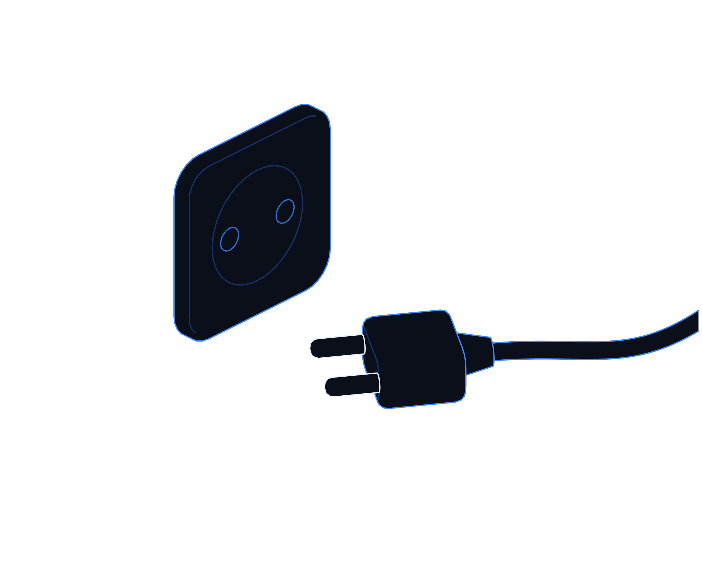
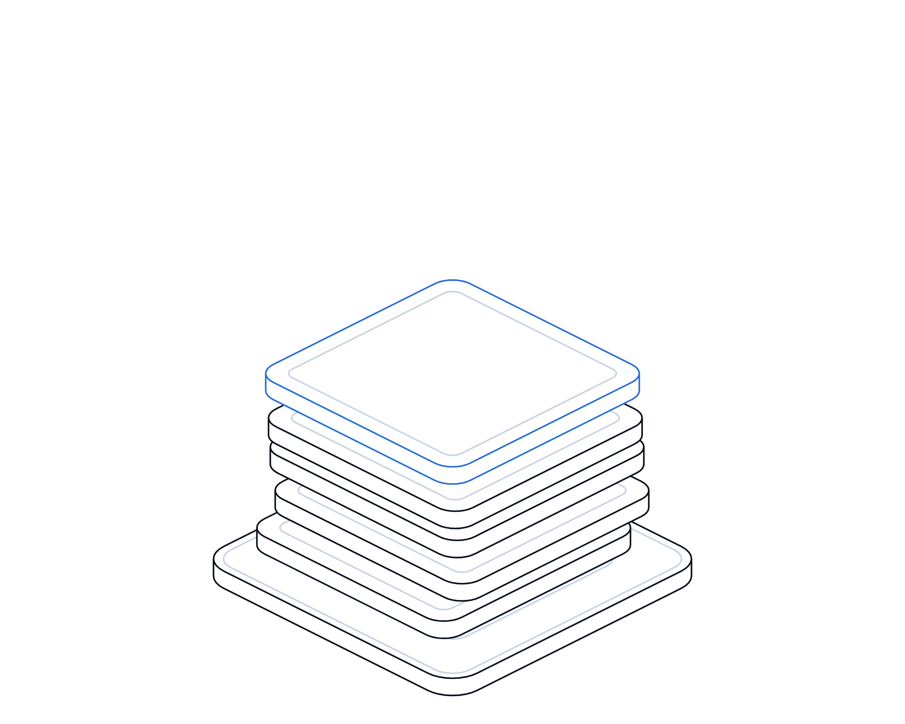

When the Cloud Goes Dark


Hot topics · Playbook
No. 08 · November 2026
Hot topics · Cloud resilience
When the cloud
goes dark.
One power fault in one London data centre zone disrupted banks, parcel firms and court hearings. A practical playbook for mapping your cloud dependencies and staying up when a provider does not.
Transputec playbooktransputec.com
Inside
Contents
A practical guide to cloud concentration risk for UK organisations: what happened in London on 20 October, how to map what you depend on, how to design and test for failure, and what to do this week, this month and this quarter.
Foreword03
Introduction04
01What happened06
02Map and design09
03Rehearse and recover14
Sources24
 Contents
ContentsWhen the Cloud Goes Dark · Hot Topics · Playbook02 / 25
Foreword
Your systems may be resilient. Is everything they depend on?
On the morning of Tuesday 20 October 2026, a power disruption at the data centre hosting one of the three zones in Google Cloud's London region set off a chain of failures. For about six hours, customers in the UK and beyond found that card payments, banking apps, parcel tracking and court video links were slow, broken or simply gone.
Most of the organisations affected did not choose to be exposed to one building in one part of London. Many will have spread their own systems across zones as the provider recommends. Others will have been exposed through suppliers whose own services ran in the affected region. And Google says that even parts of the region that kept power were affected.
This playbook is for UK business and IT leaders who want to understand that risk and reduce it at a sensible cost. It is not an argument against cloud, or against any one provider. Every provider has outages. The question is whether you know what happens to your business when yours does, and whether you have tested the answer.
The Transputec team
Transputec
Foreword When the Cloud Goes Dark · Hot Topics · Playbook03 / 25
Introduction
Three habits for when the cloud goes dark.
Concentration risk is not solved by moving everything to a second provider. It is managed by knowing what you depend on, designing each service to the level of failure it must survive, and rehearsing the recovery.
Know what you depend on
Map every critical service down to the region and zone it runs in, including the clouds your suppliers use.
Design to the right level
Decide for each service whether it must survive a zone, a region or a provider failing, and pay only for that.
Rehearse the bad day
Write runbooks, practise failover, and plan how you will tell customers and staff what is going on.
Introduction When the Cloud Goes Dark · Hot Topics · Playbook04 / 25
One zone failed. Three zones felt it.
Google says the power loss was confined to one London zone, yet some workloads in the other two were also hit. Resilience plans have to allow for failures that do not stay in their box.
Introduction When the Cloud Goes Dark · Hot Topics · Playbook05 / 25
01
Part 01
What
happened.
A power fault, a generator that did not start, and a region that wobbled for six hours.
01The London outage in brief
02Hour by hour
03Why regulators are paying attention
Part 01 When the Cloud Goes Dark · Hot Topics · Playbook06 / 25
What happened
How one power fault reached banks, couriers and courts
Spreading across zones helped many workloads, but it was not a guarantee.
Google's incident report says a disruption to the utility supply hit the data centre facility hosting zone europe-west2-b, one of three zones in its London region. The site switched to battery power as designed, but its emergency generators never took the load. Both the primary and backup control systems failed to start them, and when the batteries ran down, servers, storage and network kit in that zone lost power.1 Google described the site as a third-party facility.2
The outage ran from about 07:00 to just after 13:00 UK time, which Google's final report puts at six hours and eight minutes. A small number of customers saw problems for longer.1,3 Google listed more than 30 affected products, from virtual machines to databases and storage.1,4
Revolut customers reported problems with card payments, transfers, cash withdrawals and signing in, and the firm said customers' money and data were safe. Lloyds and HSBC confirmed customers had problems, and users reported issues with Royal Mail, DPD and Rightmove.2,5 HM Courts and Tribunals Service's cloud video platform, used for hearings in England and Wales, also went down.5,6
The most important detail for architects is what happened next door. Google says some customers running in the two unaffected zones were also hit, because of sudden demand on the remaining capacity and control-plane checks that depended on the offline zone and timed out.1 Spreading across zones helped many workloads, but it was not a guarantee.
Google's final report, published on 27 October, traces the generator failure to wiring and logic errors in the control system, and lists fixes including checks at similar sites worldwide by 15 November.1 It also notes that customers must provision their own failover where they need it.
Regulators were already watching. In July, HM Treasury designated Google Cloud EMEA and three other cloud providers as critical third parties to the UK financial sector, bringing their services to finance under Bank of England, PRA and FCA oversight.7 On the day of the outage the chair of the Treasury Committee wrote to the Bank and the FCA asking how they would use those powers.8 The regime does not shift responsibility: firms remain accountable for their own resilience.9
What happened When the Cloud Goes Dark · Hot Topics · Playbook07 / 25
Hour by hour
Tuesday 20 October, in UK time
Times are taken from Google's incident report and contemporary reporting. Early reports differed by a few minutes.
About 07:00
Power disruption at the facility hosting europe-west2-b. Generators fail to start; batteries run down.1
07:00 to 08:00
Reports spike for Revolut, Lloyds, HSBC and others. Court video links start to fail.5,6
Morning
Google confirms a power event, offers no workaround and suggests moving workloads to another zone or region.3,5
About 13:00
Google reports recovery for most workloads. Its final report closes the incident at 13:08.1,4
Afternoon
A very small number of customers still affected. The FCA says it is engaging with Google and affected firms.4,8
22 and 27 Oct
Preliminary and final incident reports explain the generator control fault and the spillover to other zones.1
What happened When the Cloud Goes Dark · Hot Topics · Playbook08 / 25
02
Part 02
Map and
design.
Find out what you really depend on, then choose how much failure each service must survive.
01Mapping dependencies, including your suppliers' clouds
02Zone, region or provider
03Setting recovery objectives
Part 02 When the Cloud Goes Dark · Hot Topics · Playbook09 / 25
This month
Map your cloud dependencies in five steps
Start with the services customers and staff would notice first. A spreadsheet is enough.
01
List your critical business services
Payments, ordering, customer portals, phones, payroll, case management. Name a business owner for each, not just a system.
02
Trace each one to where it runs
For every component, record provider, region and zone, plus shared parts such as identity, DNS, monitoring and secrets.
03
Ask suppliers the same question
Your payment processor, CRM, phone system and managed service provider all run somewhere. Ask which provider, region and zones, in writing.
04
Find the single points
Look for anything in one zone, one region or one supplier, and for many suppliers quietly sharing the same cloud region.
05
Agree a tolerance and an owner
For each service, write down how long the business can live without it and who decides when to fail over.
Remember
A supplier's outage is your outage. Your map is incomplete until it includes the clouds your suppliers use.
Map and design When the Cloud Goes Dark · Hot Topics · Playbook10 / 25
The trade-offs
Multi-zone, multi-region or multi-cloud?
Each step up protects against a bigger failure and costs more to build, run and test.
Option
Protects against
Costs and catches
Single zone
Very little. Server or disk failure, if you have spares.
Cheapest. A zone outage like London's takes you down completely.
Multi-zone
Loss of one zone, which is the provider's recommended baseline.10
Modest extra cost. October showed neighbouring zones can still be strained.
Multi-region
Loss of a whole region, such as London.
Data replication, extra capacity, latency and data residency choices to settle.
Multi-cloud
Loss of a provider, or a provider-wide control problem.
Highest cost and skills burden. Often slower to recover if untested.
Offline fallback
Everything digital failing at once.
Paper forms, a second bank card, manual processes. Cheap, but needs practice.
Map and design When the Cloud Goes Dark · Hot Topics · Playbook11 / 25
Tiering
Match the design to the damage
Plot each service by how much harm an outage causes and how fast the harm grows. Invest top right first.
Tier 2: multi-zone
High impact, slow harm
Payroll, reporting, internal tools. Multi-zone, with a tested restore into another region within a day or two.
Tier 1: multi-region
High impact, fast harm
Payments, customer logins, ordering. Run warm in a second region, with failover rehearsed at least twice a year.
Tier 3: restore
Low impact, slow harm
Archives, test systems. Good backups held in another region. Rebuild when convenient.
Tier 2: degrade
Low impact, fast harm
Website features, notifications. Multi-zone, plus a simple holding page or reduced service mode.
Speed of harm →
↑ Business impact
Map and design When the Cloud Goes Dark · Hot Topics · Playbook12 / 25
Recovery objectives
Four numbers to agree for every critical service
Agree them with the business owner and test against them. Without them, nobody knows when to fail over.

01
Maximum tolerable outage
How long before harm to customers or revenue becomes unacceptable. Finance calls this impact tolerance.
02
Recovery time objective
How quickly the service must be back, comfortably inside the maximum outage.
03
Recovery point objective
How much recent data you can lose, which sets how often you replicate.
04
Decision time
How long you wait for the provider before failing over. Decide in advance.
Map and design When the Cloud Goes Dark · Hot Topics · Playbook13 / 25
03
Part 03
Rehearse and
recover.
A failover plan that has never been run is a hope, not a plan.
01Runbooks and testing
02Status communication
03Contracts, exit and your 90-day plan
Part 03 When the Cloud Goes Dark · Hot Topics · Playbook14 / 25
Runbook
The first two hours of a regional outage
Keep a copy of this runbook outside the cloud it protects, and name a deputy for every step.
Detect independently
Use external monitoring that does not run in the same region, so you hear about it before customers do.
Confirm scope
Check the provider's status page and your own telemetry. Which zones, which services, which suppliers?
Decide by the clock
When the pre-agreed decision time passes, the named owner decides whether to fail over. No committee.
Fail over or degrade
Shift traffic to the standby region, or switch to reduced service and manual workarounds.
Recover and review
Fail back carefully, reconcile data, and write up what worked within two weeks.
Google's advice on the day was to move workloads to another zone or region. That only works if the capacity, data and permissions are already there.
Rehearse and recover When the Cloud Goes Dark · Hot Topics · Playbook15 / 25
Testing failover
Six rules for tests that mean something
Most failover plans fail on details: an expired credential, a missing quota, a DNS record nobody can change.
01
Test the scenario that happened
Simulate losing a whole zone and a whole region, including shared services such as identity and DNS.
02
Start small and planned
Begin with a scheduled tabletop, then a failover of one low-risk service, then a full exercise.
03
Measure against your objectives
Record actual recovery time and data loss, and compare them with the numbers you agreed.
04
Check capacity and quotas
Confirm the standby region can actually take the load. In October, demand surged on surviving capacity.1
05
Include your suppliers
Ask key suppliers to show their own failover results, or to join your exercise.
06
Fix, then retest
Every test produces actions. Give each an owner and a date, and repeat the test.
Rehearse and recover When the Cloud Goes Dark · Hot Topics · Playbook16 / 25
Status communication
Tell people what is happening, early and often
During the outage, many people reported problems on trackers such as Downdetector.5 Be the source they trust.
Have a status page off your main cloud
Host it with a different provider, so it stays up when your services do not, and keep templates ready.
Name who speaks
One person approves updates to customers, staff, regulators and the press, with a deputy.
Update on a rhythm
Every 30 to 60 minutes, even with no news. Say what is affected, what is safe and when you will next update.
Know who you must tell
Regulated firms may have notification duties. Check contracts and rules now, not mid-incident.
Revolut's first message stressed that customers' money and data were safe. Say what is not affected as clearly as what is.5
Rehearse and recover When the Cloud Goes Dark · Hot Topics · Playbook17 / 25
In practice
Three organisations, three levels of resilience
Payments start-up
Customer app runs in one region
The gap
Multi-zone in London, but no second region and identity tied to the same region.
The fix
Warm standby in a second region for login and payments, with replicated data and pre-approved quotas.
The check
Twice-yearly failover exercise, timed against a two-hour recovery objective.
Watch out
Data residency and latency between regions. Agree them with compliance early.
Regional distributor
Relies on a SaaS warehouse system
The gap
Own systems were fine, but the warehouse supplier ran in a single cloud region.
The fix
Supplier asked for its region, zones and recovery objectives, and a paper picking process agreed.
The check
Manual dispatch drill run with one depot each quarter.
Watch out
Supplier answers can be vague. Ask for evidence of tests, not policies.
Law firm, 300 staff
Hearings and client calls by video
The gap
No fallback when court or client video platforms failed.
The fix
Telephone dial-in details for every hearing and a second conferencing tool approved.
The check
Fee earners know the fallback and where to find dial-in numbers.
Watch out
Court platforms are outside your control. Contact the court early.
Rehearse and recover When the Cloud Goes Dark · Hot Topics · Playbook18 / 25
Contracts and exit
Questions to settle before you sign or renew
Most cloud and SaaS contracts favour the provider. You may not change the terms, but you should know them.
Topic
What to ask
Good looks like
Location
Which provider, regions and zones host our data and service?
Named in writing, with notice before any change.
Resilience
What is your recovery objective for a zone or region loss?
Stated objectives, with recent test evidence.
Incidents
How fast will you tell us, and through what channel?
Alerts within an agreed time, not only a public status page.
Service credits
What do credits cover and what are they worth?
Understood. Credits rarely cover your real losses.
Exit
How do we get our data out, in what format, and how fast?
A documented, tested export route and a realistic notice period.
Subcontractors
Who else do you rely on to deliver this service?
A list of key subcontractors and their locations.
Rehearse and recover When the Cloud Goes Dark · Hot Topics · Playbook19 / 25
Your plan
This week, this month, this quarter
Owners are suggestions. Adjust them to your structure.
This week
List your top ten business services and the region and zones each runs in. Check whether any were hit on 20 October.
Head of IT
This week
Ask your five most important suppliers which cloud regions they use and how they fared on 20 October.
Procurement lead
This month
Agree recovery objectives and a tier for each critical service. Set up monitoring and a status page off your main cloud.
Service owners
This month
Write the regional outage runbook, name decision owners and run a tabletop exercise.
IT operations lead
This quarter
Build standby for tier 1 services, run a live failover test and fix what it finds.
Head of IT
This quarter
Review contracts and exit plans. Report residual concentration risk to the board.
IT director
Rehearse and recover When the Cloud Goes Dark · Hot Topics · Playbook20 / 25
For leaders
Questions for your board and your suppliers
Ask them out loud. Vague answers are the finding.
For the board
?Which of our services would stop if one cloud region went dark for six hours, and what would it cost?
?When did we last test failing over, and did we meet our recovery objectives?
?Who has authority to trigger failover, and how fast can they decide?
For suppliers
?Which provider, region and zones run our service, and what happens if one fails?
?Were you affected on 20 October, and what have you changed since?
?How will you tell us about an outage, and how do we get our data out if we leave?
Rehearse and recover When the Cloud Goes Dark · Hot Topics · Playbook21 / 25
Checklist
Are you ready for the cloud to go dark?
Tick what is true today. Anything blank is your next action.
Services mapped to provider, region and zone
Including identity and DNS.
Suppliers' cloud locations confirmed in writing
Recovery objectives agreed per service
With an owner and a decision time.
Design matches the tier
Tier 1 services survive the loss of a region.
Runbook stored outside the cloud it protects
With named owners and deputies.
Failover tested in the last six months
With results recorded and actions closed.
Status page and templates ready, hosted off your main cloud
Exit route documented and tested
For each critical service.
Rehearse and recover When the Cloud Goes Dark · Hot Topics · Playbook22 / 25
Glossary
Words worth knowing
Region
A geographic area where a cloud provider runs data centres, such as London (europe-west2).
Zone
A separate part of a region with its own power and networking, designed to fail independently.
Concentration risk
The danger of many services, or many firms, depending on the same provider or location.
Control plane
The provider systems that create, manage and check resources, as opposed to running them.
Failover
Moving a service to standby resources when the primary ones fail.
Recovery time objective
The target time to restore a service after it fails.
Recovery point objective
The maximum amount of recent data you can afford to lose.
Impact tolerance
The UK financial regulators' term for the maximum tolerable disruption to an important business service.
Critical third party
A provider designated by HM Treasury whose services to UK finance are overseen by the regulators.
UPS
Uninterruptible power supply: batteries that bridge the gap until generators start.
Glossary When the Cloud Goes Dark · Hot Topics · Playbook23 / 25
Sources
Sources and notes
Sources were accessed on 4 November 2026. Times are UK time (BST). Google did not name the facility operator. Source 9 explains that firms remain accountable for their own resilience when a provider is designated.
1
Google Cloud Service Health, incident Xs2XTHzAVC9YnafnPyzj, preliminary (22 Oct) and final (27 Oct 2026) reports. status.cloud.google.com/incidents/Xs2XTHzAVC9YnafnPyzj
2
AFP via eNCA, Power outage hits Google Cloud services, disrupting UK banks, 20 Oct 2026. enca.com/business/power-outage-hits-google-cloud-services-disrupting-uk-banks
3
The Register, Google Cloud's London zones takes a nap, multiple services disrupted, 20 Oct 2026. theregister.com/paas-and-iaas/2026/10/20/ (article 5304084)
4
The Register, Google Cloud says a 'power event' caused today's outage, 20 Oct 2026. theregister.com/paas-and-iaas/2026/10/20/ (article 5304160)
5
PA Media via Yahoo News UK, Banks and courts affected by disruption as Google apologises for cloud outage, 20 Oct 2026. uk.news.yahoo.com/banks-courts-affected-disruption-google-114059868.html
6
The Irish Times, Millions affected by Revolut disruption linked to Google Cloud outage, 20 Oct 2026. irishtimes.com/business/2026/10/20/revolut-services-hit-by-outage-including-in-ireland/
7
HM Treasury, UK financial system strengthened with new safeguards for major technology providers, 10 Jul 2026. gov.uk/government/news/uk-financial-system-strengthened-with-new-safeguards-for-major-technology-providers
8
City AM, UK watchdogs push for answers on Google Cloud outage, 20 Oct 2026. cityam.com/revolut-hit-with-service-disruption-as-users-unable-to-make-payments/
9
Bank of England, PRA and FCA, PS16/24 Operational resilience: critical third parties to the UK financial sector, 12 Nov 2024. bankofengland.co.uk
10
Google Cloud documentation, Regions and zones, accessed Nov 2026. docs.cloud.google.com/compute/docs/regions-zones
Sources When the Cloud Goes Dark · Hot Topics · Playbook24 / 25
Want to know what breaks
when a zone goes dark?
Transputec helps UK organisations map their cloud and supplier dependencies, design for the failures that matter, and rehearse recovery before they need it.
Book a cloud resilience reviewtransputec.com
Next in the series
No. 09 · Ransomware gets an upgrade
Transputec · Hot Topics · No. 08